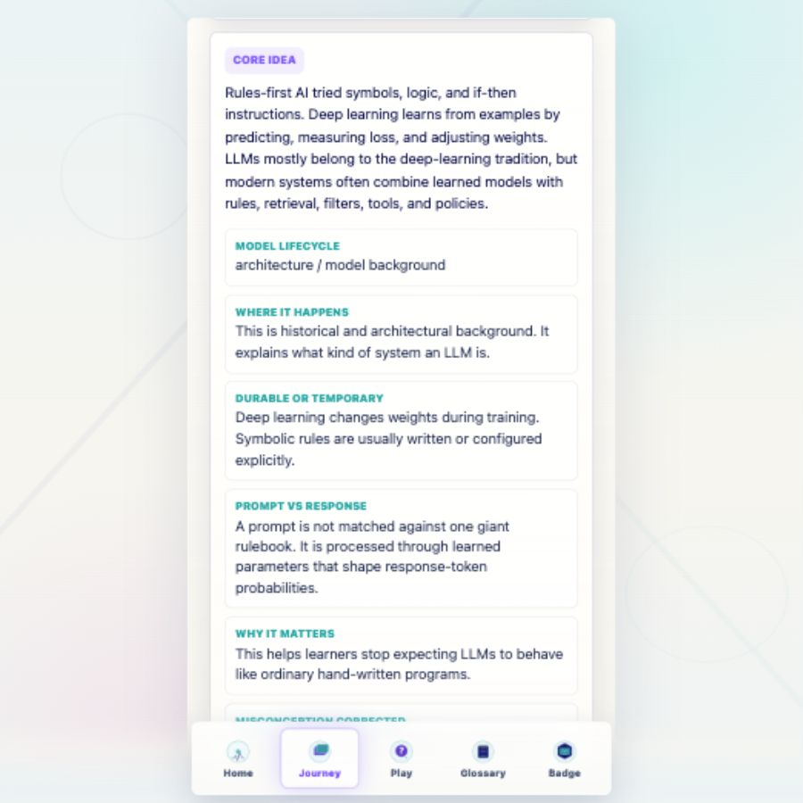
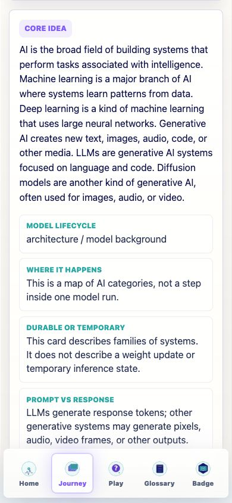
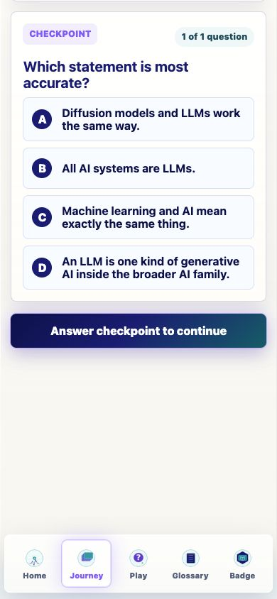
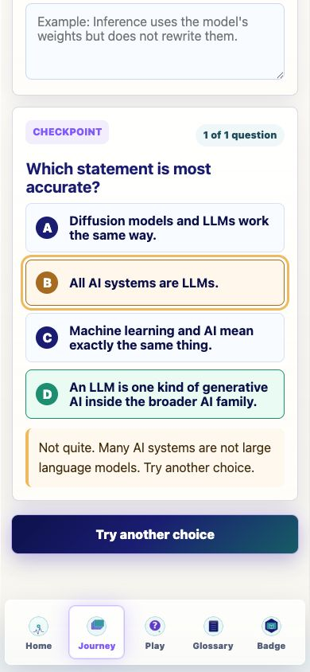
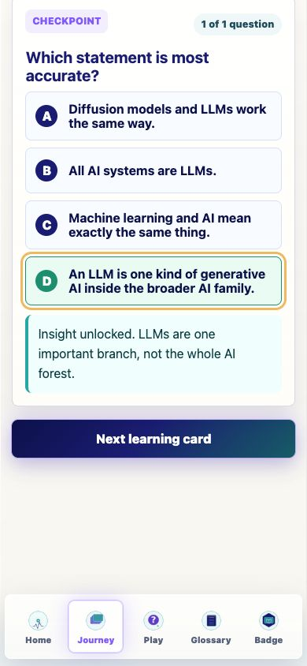
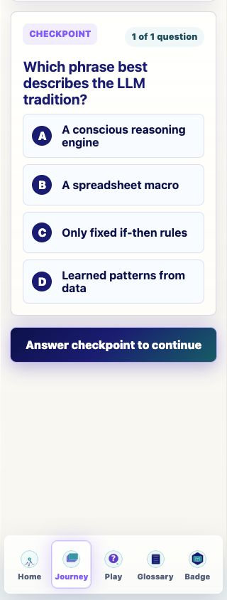
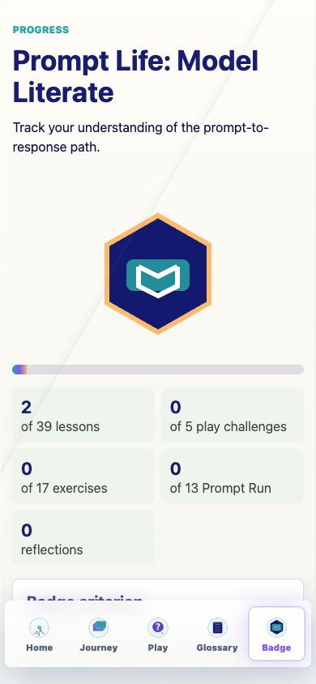
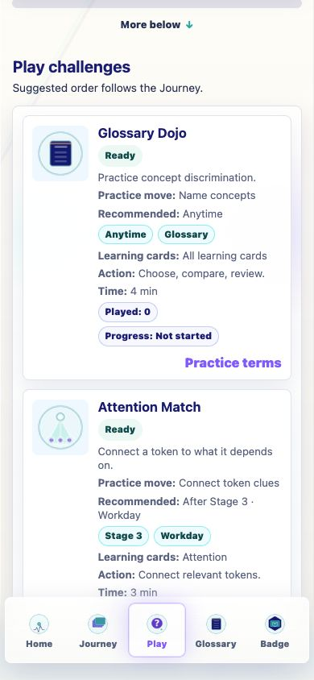

Prompt Life v0.27.6
Journey Checkpoint Layout Repair
This pass makes Journey learning-card concept blocks consistently one-column, hardens checkpoint flow for future multi-question cards, and keeps checkpoint actions clear of the mobile bottom nav.
Summary
- Forced the Journey learning-card core-detail blocks to remain one column at every viewport width.
- Hardened the checkpoint state model for zero, one, or future multi-question learning cards.
- Changed wrong-answer primary copy to Try another choice and kept single-question final flow on Next learning card.
- Added extra Journey bottom spacing using the existing bottom-nav token and safe-area inset.
- Bumped the visible app/package version to v0.27.6.
Recommendations Next Pass
- Author one real two-question Journey card and one three-question QA fixture if multi-checkpoint learning is desired in content.
- Add a small automated Journey checkpoint harness so multi-question behavior can be tested without editing curriculum data.
- Consider extracting LessonScreen checkpoint logic into a small helper once multi-question cards become common.
Challenges And Risks
- All 39 live Journey cards currently have exactly one checkpoint question, so the Next question state is code-verified but not live-screenshot-verified.
- The browser read-only page scope did not expose localStorage, so full storage snapshot/restore was not available during QA.
- The existing Vite large-chunk warning remains unchanged.
Journey Screens, Panels, Routes Changed
- Journey learning-card core-detail panel layout.
- Journey checkpoint panel state, progress label, and feedback copy.
- Journey sticky primary action spacing and labels.
- Badge page only reflects the new version number.
Learner-Facing Copy Changes
- Wrong-answer sticky action now reads Try another choice.
- The inline checkpoint hint now starts Answer the checkpoint first.
- Wrong-answer feedback fallback now starts This choice reveals a common mix-up.
- Single-question correct state continues to read Next learning card.
Checkpoint Data / Model / Logic Changes
- LessonScreen now normalizes checkpointItems from quiz.questions when present, or from a single quiz object when not.
- Zero-question cards can advance without rendering a broken checkpoint.
- Progress labels use the actual checkpoint list length: X of N question(s).
- Wrong selections reveal feedback but do not advance or complete the learning card.
- The learning card completes only after the final checkpoint question is correct and the learner taps the primary action.
- The answer audit now handles future quiz.questions arrays with stable per-question shuffle keys.
localStorage
- Read/preserved: promptlife:v1:lastLocation, promptlife:v1:lessonId, promptlife:v1:progress, promptlife:v1:reflections, promptlife:v1:exerciseProgress, promptlife:v1:promptRunProgress, promptlife:v1:traceComplete, promptlife:v1:learningTourComplete, promptlife:v1:gameInsights, promptlife.playChallenges.v1, Glossary Dojo storage, and promptlife:v1:choiceOrderSeed.
- Written during normal QA: Journey completion was exercised through the app, then the debug Journey-only reset control Mark all lessons incomplete was used.
- Created/migrated: none.
- Reset behavior: the narrow debug Journey reset reported All lessons marked incomplete. Full clear-all reset was not used.
Verification Commands
- npm run typecheck: passed.
- npm run build: passed with the existing Vite large-chunk warning.
- npm run build:pages: passed with the existing Vite large-chunk warning.
- npm run audit:answers: passed; 69 total surfaces, 46 randomized, 23 fixed-order.
Mobile QA
- 390px: one-column detail blocks passed; checkpoint before/wrong/correct states passed; primary action stayed above bottom nav.
- 320px: checkpoint fit without horizontal overflow; repeated wrong selections stayed on Try another choice; correct selection switched to Next learning card.
- No browser console errors were observed.
Desktop / Laptop QA
- 900px viewport: Journey detail blocks stayed one column with matching x position and width.
- No desktop horizontal overflow was detected.
Files Changed
- src/main.tsx
- src/styles/global.css
- scripts/audit-answers.mjs
- package.json
- package-lock.json
- README.md
- docs/REVIEW_NOTES.md
- docs/journey/prompt-life-v0-27-6-journey-checkpoint-layout-report.html
- docs/journey/prompt-life-v0-27-6-journey-checkpoint-layout-report.pdf
- docs/journey/screenshots/v0-27-6-*.png
Reports And Screenshots Created
- This PDF report and matching HTML report were created in docs/journey/.
- Screenshots were captured for desktop concept blocks, 390px concept blocks, 390px checkpoint before/wrong/correct, 320px checkpoint, Badge smoke, and Play smoke.
- A live Next question screenshot was not created because no current Journey card has more than one checkpoint question.







